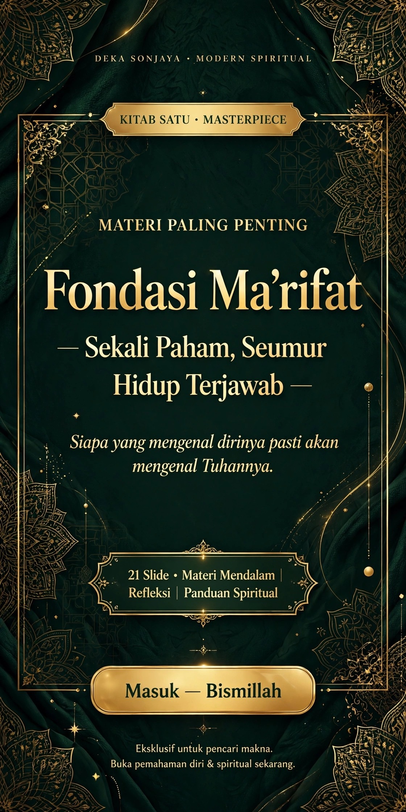
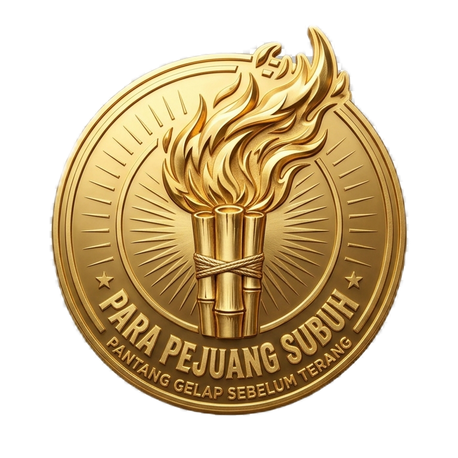

Deka SonjayaModern Spiritual
0:00
0:00
Audio: slide1.mp3 • Geser bar untuk ke menit yang diinginkan
Daftar Isi


“Siapa yang mengenal dirinya, pasti akan mengenal Tuhannya.
Kenali dirimu, maka hidupmu tidak akan berantakan.”